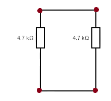
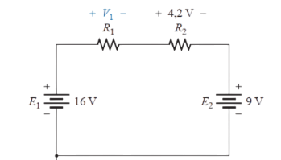
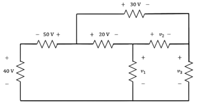

Nó é o ponto de ligação de componentes. Ou seja, é o ponto onde dois ou mais componentes se encontram (ponto azul).
A soma algébrica das correntes que se encontram em um nó é zero (0).
Soma algébrica está relacionada com o sinal positivo ou negativo associado ao sentido da corrente.
Malha é o caminho fechado no circuito.
A soma algébrica das tensões em um caminho fechado, percorrido num circuito, é igual a zero (0).
A soma algébrica está relacionada à polaridade da tensão sobre o componente quando a malha é percorrida.
Quando passamos por um componente:
A aplicação da lei exige que definamos um caminho fechado de investigação, permitindo que comecemos em um ponto qualquer no circuito, nos desloquemos através dele e encontremos nosso caminho de volta até o ponto de partida original.
O caminho não precisa ser circular, quadrado ou ter qualquer outra forma definida; ele tem de simplesmente fornecer uma maneira de sair de um ponto e voltar a ele sem deixar o circuito.
Em um circuito com uma fonte de 16 V e duas quedas conhecidas de 4,2 V e 9 V, calcular a tensão desconhecida V₁.
Aplicando a LKT:
+16 − 4,2 − 9 − V₁ = 0
16 − 13,2 − V₁ = 0
V₁ = 2,8 V
Resposta: A queda de tensão desconhecida é de 2,8 V.
Considere o circuito abaixo, com três malhas e várias fontes de tensão.
Aplicando a Lei de Kirchhoff das Tensões (LKT) em cada malha, temos:
+40 V + 50 V − 20 V − V₁ = 0
V₁ = 70 V
+20 V − 30 V + V₂ = 0
V₂ = 10 V
+70 V − 10 V − V₃ = 0
V₃ = 60 V
Conclusão: Cada malha obedece à Lei das Tensões de Kirchhoff (ΣV = 0).
Assim, os valores obtidos são: V₁ = 70 V, V₂ = 10 V e V₃ = 60 V.
Para um circuito com Req = 10 kΩ e IT = 1 mA: